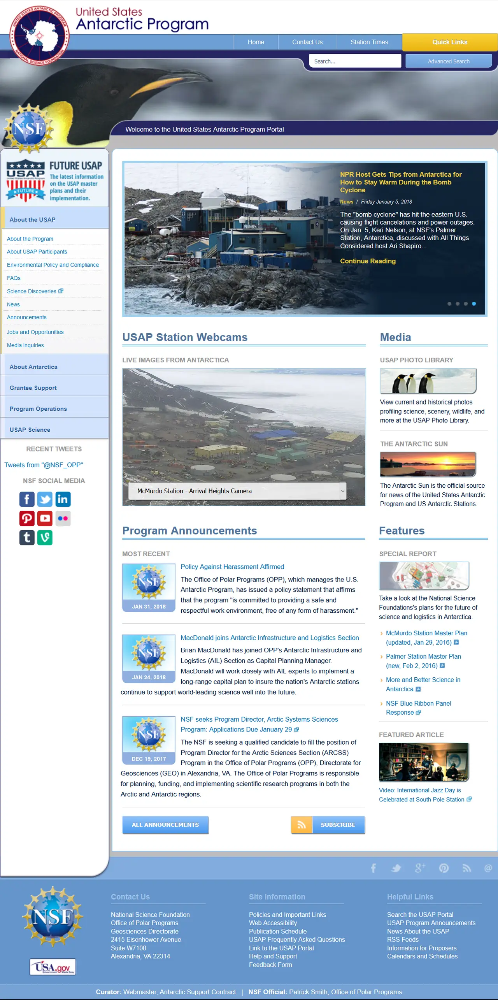

短答
站点是爬虫能够穿行的文档、链接、模板和状态码组成的系统。
截图是一个已经指向分区、媒体和公告的首页。存在于磁盘上、没有任何链接的文件是孤立页，是健康发现。模板缺陷是系统发现，因为它会重复。SEO 健康看的是系统。SEO 增长问的是系统仍然没有覆盖哪些主题。这些问题保持分开。
定义
用 Mika Visibility 的说法，深度审计把站点看成系统，而不是一个分数。可抓取性、架构、页面基础和内链是带样例 URL 的发现分组。清掉每一条技术警告不会变成增长分数，也不会变成 GEO 分数。
结构如何承载发现
从枢纽追踪到重要文档的路径，并把重复的缺陷当作模板发现。
增加 URL 却不链接它们，并不会以爬虫能用的方式扩大系统。诊断之后的蓝图应该点名要修的路径，而不是新文件的配额。再审计走同样的枢纽，并检查样例是否变了。

要检查什么
- 从枢纽到重要文档的路径
- 没有链接而存在的孤立页
- 重复缺陷被称为模板
- 与被链接集合一致的 sitemap
- 走同样枢纽的再审计
一个结构示例
工程部门把一百份 PDF 上传到一个既无链接也不在 sitemap 里的文件夹，然后问为什么文档没有出现在搜索里。系统从未包含它们。修复是从引用它们的产品页链接公开的 PDF，并把这些 URL 列进 sitemap。私有 PDF 有意地保持无链接。
它不声称什么
一个连通的系统不保证排名或引用。
Mika Visibility 把它归到哪里
Mika Visibility 把架构读成 SEO 健康：重要模板是否位于爬虫能从枢纽跟着走的路径上。深度和孤立页是结构。没被回答的买家问题是 SEO 增长。整齐的树不能保证页面容易被引用，那是 GEO 的质量，不是引用承诺。
截图里的首页是进入系统的一个入口。审计仍然必须跟着链接走。
常见问题
是什么使一组文件成为一个站点？
站点是爬虫能够穿行的文档、链接、模板和状态码组成的系统。
重复的缺陷应该如何命名？
从枢纽追踪到重要文档的路径，并把重复的缺陷当作模板发现。
连通的系统能保证排名吗？
一个连通的系统不保证排名或引用。
下一步
做一次结构化的 SEO + GEO 审计，查看健康发现、增长缺口和可以执行的蓝图。
更清晰的实体、答案、证据和上下文，会让页面更容易被理解与引用。任何回答产品中的结果都不作保证。